Code
library(plyr)
library(tidyverse)
library(readr)
library(summarytools)
library(psych)
library(lattice)
library(FSA)
library(kableExtra)
knitr::opts_chunk$set(echo = T)Alexis Gamez
April 12, 2023
# A tibble: 6 × 15
Name Platform Year_of_Release Genre Publisher NA_Sales EU_Sales JP_Sales
<chr> <chr> <dbl> <chr> <chr> <dbl> <dbl> <dbl>
1 Wii Sports Wii 2006 Spor… Nintendo 41.4 29.0 3.77
2 Super Mar… NES 1985 Plat… Nintendo 29.1 3.58 6.81
3 Mario Kar… Wii 2008 Raci… Nintendo 15.7 12.8 3.79
4 Wii Sport… Wii 2009 Spor… Nintendo 15.6 11.0 3.28
5 Pokemon R… G 1996 Role… Nintendo 11.3 8.89 10.2
6 Tetris G 1989 Puzz… Nintendo 23.2 2.26 4.22
# … with 7 more variables: Other_Sales <dbl>, Global_Sales <dbl>,
# Critic_Score <dbl>, Critic_Count <dbl>, User_Score <dbl>, User_Count <dbl>,
# Rating <chr>From my previous project proposal post, I was able to receive valuable feedback from Professor Pang. That feedback applying to my selection of variables and their classifications, which then applies to my hypothesis. Acknowledging the feedback, I’d like to address some changes to my analysis from my previous post.
The following list of variables was shown in my previous post along with an acknowledgment that this would be the list of variables that I was to work with throughout the duration of my project, and that remains true.
The variables are as follows:
However, the feedback I received applied more directly to my classification of independent and dependent variables. I originally listed that I would be utilizing 6 independent and 5 dependent variables throughout my analysis. See below for classifications
The 6 independent variables are as follows:
The 5 dependent variables are:
While not entirely untrue, it’s definitely incorrect. The nature of this project requires the analysis of exploratory and explanatory variables using a combination of different regression and alternative analysis models. Therefore, an over saturation of exploratory (independent) variables could lead to an overly complex model. Knowing this now, I’ve reclassified the variables appropriately below.
The 2 main independent variables are as follows:
The 4 confounding variables are as follows:
The 5 dependent variables are:
A confounding variable is a variable that influences both the dependent and independent variable, which causes a spurious association within the model. It must meet 2 conditions in order to be considered a true confounder.
It must be correlated to the independent variable, we’ll be testing this at the beginning of the analysis.
It must be causally related to the dependent variable. Again, to be tested at the start of my analysis.
Also, note that our list of dependent variable did not change. That is because my goal for this project is to test my hypothesis within each individual region and compare their models side by side to see if my results are any more true or false in varying regions. My final results should include 5 total models, each one corresponding to a respective dependent variable. Thus, each model will contain 1 dependent variable, 2 independent variable and a varying number of confounders.
My last mention of feedback for this post will be acknowledging a shift in my original hypothesis for which I wrote, “As of 2017, independent variables “Platform” and “Genre” will have the most significant impact on Global sales”. While believe what I wrote was representative of my hypothesis, I don’t believe it was conducive to analysis and understanding from those reading this. As a result, I’ve decided to reorganize my hypothesis into a format that is a bit easier follow. I will also be rewording my research question to better reflect the changes made to my project’s structure.
H1: Platform and Genre significantly impact Global Sales
H2: Platform and Genre significantly impact US and EU Sales
H3: Platform and Genre will not significantly impact JPN sales
Of the two selected independent variables (Platform & Genre), what impact does each have on the commercial success of a video game and does that impact vary by region?
With the corrections made to my hypothesis and research question, I believe I’ve acknowledged all the feedback I received from my first post.
Picking up where I left off from the last post, my goal in this section is to acknowledge the steps I didn’t get the opportunity to execute before. To start, I want to summarize my data and get a visual representation of the numbers to refresh my memory of what I’m working with.
Data Frame Summary
Video_Game_Sales
Dimensions: 17416 x 15
Duplicates: 0
----------------------------------------------------------------------------------------------------------------------
No Variable Stats / Values Freqs (% of Valid) Graph Valid Missing
---- ----------------- ------------------------------ --------------------- --------------------- ---------- ---------
1 Name 1. Need for Speed: Most Want 12 ( 0.1%) 17416 0
[character] 2. FIFA 14 9 ( 0.1%) (100.0%) (0.0%)
3. LEGO Marvel Super Heroes 9 ( 0.1%)
4. Madden NFL 07 9 ( 0.1%)
5. Madden NFL 08 9 ( 0.1%)
6. Ratatouille 9 ( 0.1%)
7. Angry Birds Star Wars 8 ( 0.0%)
8. Cars 8 ( 0.0%)
9. FIFA 15 8 ( 0.0%)
10. FIFA Soccer 13 8 ( 0.0%)
[ 12070 others ] 17327 (99.5%) IIIIIIIIIIIIIIIIIII
2 Platform 1. DS 2251 (12.9%) II 17416 0
[character] 2. PS2 2206 (12.7%) II (100.0%) (0.0%)
3. PS3 1362 ( 7.8%) I
4. Wii 1359 ( 7.8%) I
5. PSP 1304 ( 7.5%) I
6. X360 1298 ( 7.5%) I
7. PS 1200 ( 6.9%) I
8. PC 1128 ( 6.5%) I
9. GBA 844 ( 4.8%)
10. X 833 ( 4.8%)
[ 21 others ] 3631 (20.8%) IIII
3 Year_of_Release Mean (sd) : 2006.6 (5.9) 42 distinct values : : 17408 8
[numeric] min < med < max: : : (100.0%) (0.0%)
1976 < 2008 < 2017 : : : .
IQR (CV) : 8 (0) . : : : :
. : : : : :
4 Genre 1. Action 3503 (20.1%) IIII 17416 0
[character] 2. Sports 2408 (13.8%) II (100.0%) (0.0%)
3. Misc 1813 (10.4%) II
4. Role-Playing 1545 ( 8.9%) I
5. Adventure 1478 ( 8.5%) I
6. Shooter 1349 ( 7.7%) I
7. Racing 1282 ( 7.4%) I
8. Simulation 925 ( 5.3%) I
9. Platform 900 ( 5.2%) I
10. Fighting 864 ( 5.0%)
[ 2 others ] 1349 ( 7.7%) I
5 Publisher 1. Electronic Arts 1380 ( 7.9%) I 17416 0
[character] 2. Activision 1005 ( 5.8%) I (100.0%) (0.0%)
3. Namco Bandai Games 972 ( 5.6%) I
4. Ubisoft 970 ( 5.6%) I
5. Konami Digital Entertainm 865 ( 5.0%)
6. THQ 728 ( 4.2%)
7. Nintendo 722 ( 4.1%)
8. Sony Computer Entertainme 704 ( 4.0%)
9. Sega 660 ( 3.8%)
10. Take-Two Interactive 433 ( 2.5%)
[ 617 others ] 8977 (51.5%) IIIIIIIIII
6 NA_Sales Mean (sd) : 0.3 (0.8) 399 distinct values : 17416 0
[numeric] min < med < max: : (100.0%) (0.0%)
0 < 0.1 < 41.4 :
IQR (CV) : 0.2 (3.1) :
:
7 EU_Sales Mean (sd) : 0.1 (0.5) 306 distinct values : 17416 0
[numeric] min < med < max: : (100.0%) (0.0%)
0 < 0 < 29 :
IQR (CV) : 0.1 (3.5) :
:
8 JP_Sales Mean (sd) : 0.1 (0.3) 245 distinct values : 17416 0
[numeric] min < med < max: : (100.0%) (0.0%)
0 < 0 < 10.2 :
IQR (CV) : 0 (4) :
:
9 Other_Sales Mean (sd) : 0 (0.2) 157 distinct values : 17416 0
[numeric] min < med < max: : (100.0%) (0.0%)
0 < 0 < 10.6 :
IQR (CV) : 0 (4) :
:
10 Global_Sales Mean (sd) : 0.5 (1.5) 627 distinct values : 17416 0
[numeric] min < med < max: : (100.0%) (0.0%)
0 < 0.2 < 82.5 :
IQR (CV) : 0.4 (3) :
:
11 Critic_Score Mean (sd) : 68.9 (14) 82 distinct values : 8336 9080
[numeric] min < med < max: . : : (47.9%) (52.1%)
13 < 71 < 98 : : : :
IQR (CV) : 19 (0.2) . : : : :
. : : : : : : :
12 Critic_Count Mean (sd) : 26.2 (19) 106 distinct values : 8336 9080
[numeric] min < med < max: : : (47.9%) (52.1%)
3 < 21 < 113 : : .
IQR (CV) : 25 (0.7) : : : .
: : : : : . .
13 User_Score Mean (sd) : 7.1 (1.5) 95 distinct values : 7798 9618
[numeric] min < med < max: : : (44.8%) (55.2%)
0 < 7.5 < 9.7 : :
IQR (CV) : 1.8 (0.2) . : : : .
. . : : : : :
14 User_Count Mean (sd) : 162.7 (562.8) 903 distinct values : 7798 9618
[numeric] min < med < max: : (44.8%) (55.2%)
4 < 25 < 10766 :
IQR (CV) : 71 (3.5) :
:
15 Rating 1. AO 1 ( 0.0%) 10252 7164
[character] 2. E 4120 (40.2%) IIIIIIII (58.9%) (41.1%)
3. E10+ 1473 (14.4%) II
4. EC 8 ( 0.1%)
5. K-A 3 ( 0.0%)
6. M 1599 (15.6%) III
7. RP 3 ( 0.0%)
8. T 3045 (29.7%) IIIII
----------------------------------------------------------------------------------------------------------------------Looking at the data, I know there were a couple of adjustments I wanted to make following my last final project post. The first being a couple of adjustments to the platform variable. First, I’m going to extract all unique platform values to get a complete list of included platforms.
$Platform
[1] "Wii" "NES" "G" "DS" "X360" "PS3" "PS2" "SNES" "GBA" "3DS"
[11] "PS4" "N64" "PS" "X" "PC" "2600" "PSP" "XOne" "WiiU" "GC"
[21] "GEN" "DC" "PSV" "SAT" "SCD" "WS" "NG" "TG16" "3DO" "GG"
[31] "PCFX"Next, I’ll duplicate the Platform column and re-code the values so that they pertain to their respective manufacturer. This will clean up the data a bit and make analysis easier in the future.
VGS <- Video_Game_Sales
VGS$Manufacturer <- VGS$Platform
VGS <- VGS %>%
mutate(Manufacturer=recode(Manufacturer,
'PS4'='Sony',
'PS3'='Sony',
'PS2'='Sony',
'PS'='Sony',
'PSV'='Sony',
'PSP'='Sony',
'NES'='Nintendo',
'SNES'='Nintendo',
'N64'='Nintendo',
'GC'='Nintendo',
'DS'='Nintendo',
'Wii'='Nintendo',
'WiiU'='Nintendo',
'GBA'='Nintendo',
'3DS'='Nintendo',
'G'='Nintendo',
'GEN'='Sega',
'SCD'='Sega',
'GG'='Sega',
'SAT'='Sega',
'DC'='Sega',
'X'='Microsoft',
'X360'='Microsoft',
'XOne'='Microsoft',
'TG16'='NEC',
'PCFX'='NEC'))Below, it can be seen that the re-coding worked! Now, we’ll draw out a list of unique values for the rest of the categorical variables we have at our disposal
$Manufacturer
[1] "Nintendo" "Microsoft" "Sony" "PC" "2600" "Sega"
[7] "WS" "NG" "NEC" "3DO" [[1]]
# A tibble: 12 × 1
Genre
<chr>
1 Sports
2 Platform
3 Racing
4 Role-Playing
5 Puzzle
6 Misc
7 Shooter
8 Simulation
9 Action
10 Fighting
11 Adventure
12 Strategy [[1]]
# A tibble: 8 × 1
Rating
<chr>
1 E
2 M
3 T
4 E10+
5 K-A
6 AO
7 EC
8 RP I’d like to better visualize my descriptive statistics from last time, so again I’m going to do some re-coding. This time, I will be re-coding the Manufacturer, Genre and Rating variables so that each unique value corresponds to a number. Again, this makes it easier to draw up our numbers.
VGS <- VGS %>%
mutate(Manufacturer = recode(Manufacturer,
`1` = "Sony",
`2` = "Nintendo",
`3` = "Sega",
`4` = "Microsoft",
`5` = "PC",
`6` = "Neo Geo",
`7` = "WS",
`8` = "3DO",
`9` = "NEC",
`10` = "2600"))
VGS <- VGS %>%
mutate(Genre = recode(Genre,
`1` = "Sports",
`2` = "Platform",
`3` = "Racing",
`4` = "Role-Playing",
`5` = "Puzzle",
`6` = "Misc",
`7` = "Shooter",
`8` = "Simulation",
`9` = "Action",
`10` = "Fighting",
`11` = "Adventure",
`12` = "Strategy"))
VGS <- VGS %>%
mutate(Rating = recode(Rating,
`1` = "E",
`2` = "M",
`3` = "T",
`4` = "E10+",
`5` = "K-A",
`6` = "AO",
`7` = "EC",
`8` = "RP"))
VGS_select <- VGS %>%
select(Genre, Manufacturer, Rating, Global_Sales, NA_Sales, EU_Sales, JP_Sales, Other_Sales)
VGS_Desc <- describe(x=VGS_select) %>%
select(c(vars, n, mean, sd, median, min, max, range))
kable(VGS_Desc) %>%
kable_styling("striped")| vars | n | mean | sd | median | min | max | range | |
|---|---|---|---|---|---|---|---|---|
| Genre* | 1 | 17416 | 5.8861966 | 3.7733097 | 6.00 | 1.00 | 12.00 | 11.00 |
| Manufacturer* | 2 | 17416 | 6.8492765 | 2.1116870 | 6.00 | 1.00 | 10.00 | 9.00 |
| Rating* | 3 | 10252 | 4.5534530 | 2.6125566 | 3.00 | 1.00 | 8.00 | 7.00 |
| Global_Sales | 4 | 17416 | 0.5164693 | 1.5261242 | 0.16 | 0.01 | 82.54 | 82.53 |
| NA_Sales | 5 | 17416 | 0.2545343 | 0.8006725 | 0.07 | 0.00 | 41.36 | 41.36 |
| EU_Sales | 6 | 17416 | 0.1407269 | 0.4973405 | 0.02 | 0.00 | 28.96 | 28.96 |
| JP_Sales | 7 | 17416 | 0.0750195 | 0.3034122 | 0.00 | 0.00 | 10.22 | 10.22 |
| Other_Sales | 8 | 17416 | 0.0459084 | 0.1839322 | 0.01 | 0.00 | 10.57 | 10.57 |
Our data is looking good! Next, I’d like to draw up our explanatory and control variable to see if there’s any further cleaning we can do.
| Manufacturer | Freq |
|---|---|
| 2600 | 133 |
| 3DO | 3 |
| Microsoft | 2395 |
| NEC | 3 |
| NG | 12 |
| Nintendo | 6477 |
| PC | 1128 |
| Sega | 259 |
| Sony | 6999 |
| WS | 7 |
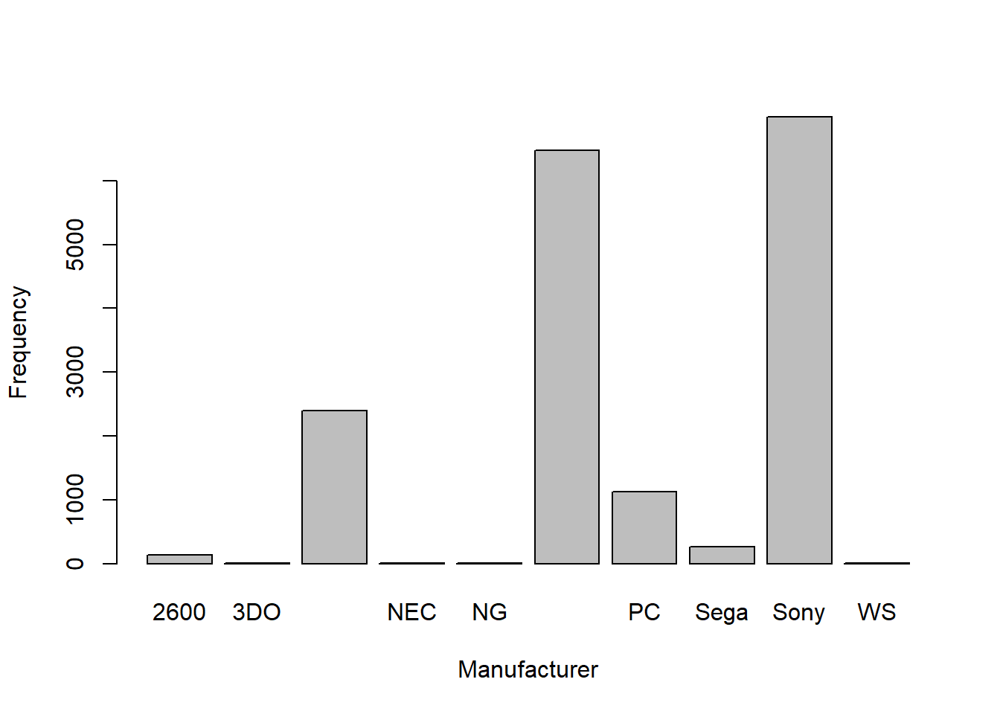
It looks like the data I have for 2600, 3DO, NEC, NG and WS is so small in comparison to the other manufacturers that it’s practically negligible. I don’t want this to adversely affect my analysis so I’m remove those rows from the data frame.
Now it’s time to draw up the Genre variable.
| Genre | Freq |
|---|---|
| Action | 3503 |
| Adventure | 1478 |
| Fighting | 864 |
| Misc | 1813 |
| Platform | 900 |
| Puzzle | 615 |
| Racing | 1282 |
| Role-Playing | 1545 |
| Shooter | 1349 |
| Simulation | 925 |
| Sports | 2408 |
| Strategy | 734 |
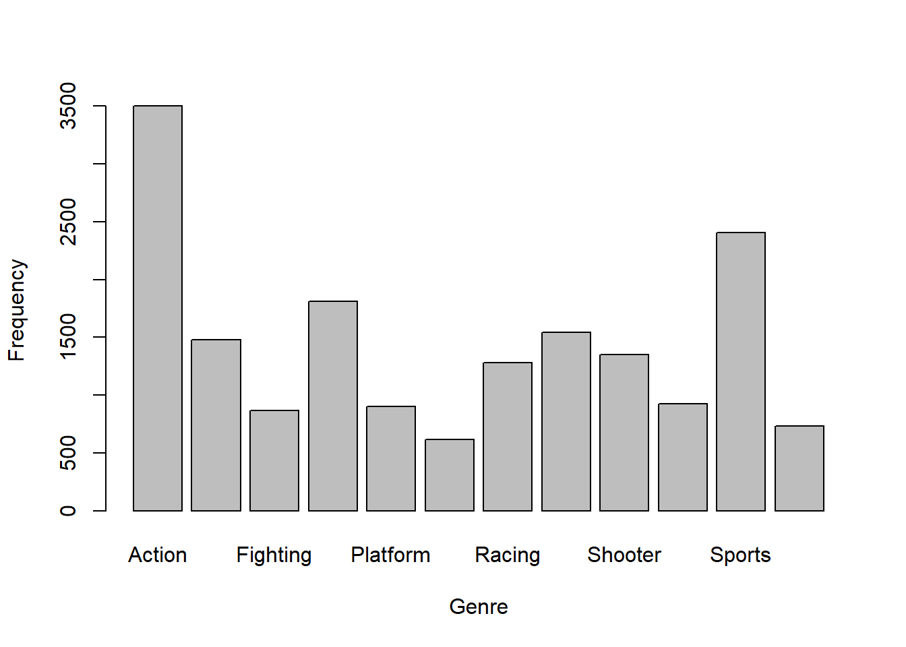
In this case, it seems all genres have adequate data and no changes need to be made to the data.
The last variable I want to draw up is Rating
| Rating | Freq |
|---|---|
| AO | 1 |
| E | 4120 |
| E10+ | 1473 |
| EC | 8 |
| K-A | 3 |
| M | 1599 |
| RP | 3 |
| T | 3045 |
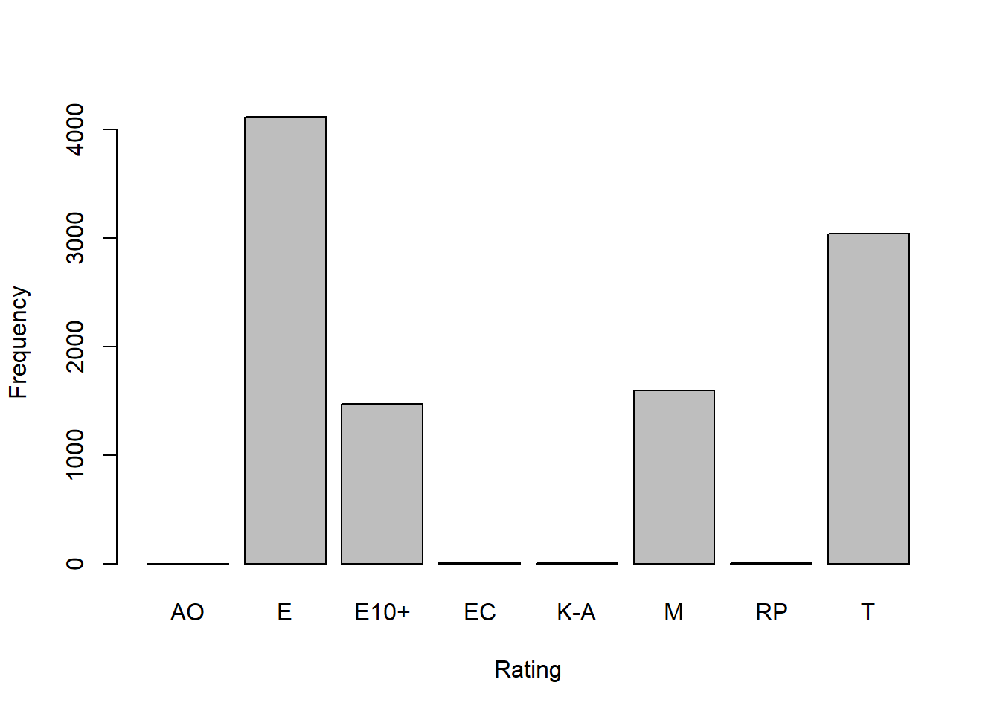
Similar to manufacturer, there are some irrelevant pieces of data that I think my analysis could do without. In this situation, I’ll be eliminating any rows containing ratings AO, EC, K-A and RP.
To start the hypothesis testing section I’d like to introduce my list of Explanatory, Response and Control Variables.
In this section we’ll be testing the explanatory variables, Genre & Manufacturer, against the main response variable Global Sales. We’re also going to be testing a control variable Rating against sales to see if there is any significance. It’s important to note that all 3 variables we will be testing are categorical, where as Global Sales is continuous.
First up is the Manufacturer variable.
Df Sum Sq Mean Sq F value Pr(>F)
Manufacturer 4 194 48.53 17.99 9.83e-15 ***
Residuals 10232 27599 2.70
---
Signif. codes: 0 '***' 0.001 '**' 0.01 '*' 0.05 '.' 0.1 ' ' 1Here we see that our Pr(>F) value is very small, allowing us to reject the null at a significance level of 0.001. This means the Manufacturer means are significantly different.
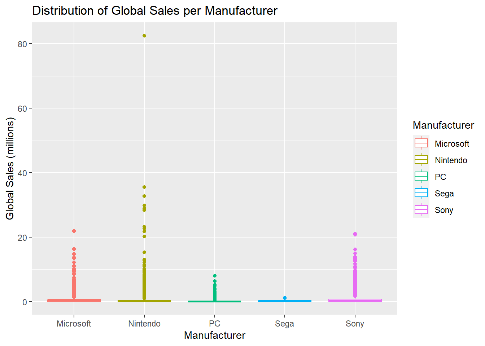
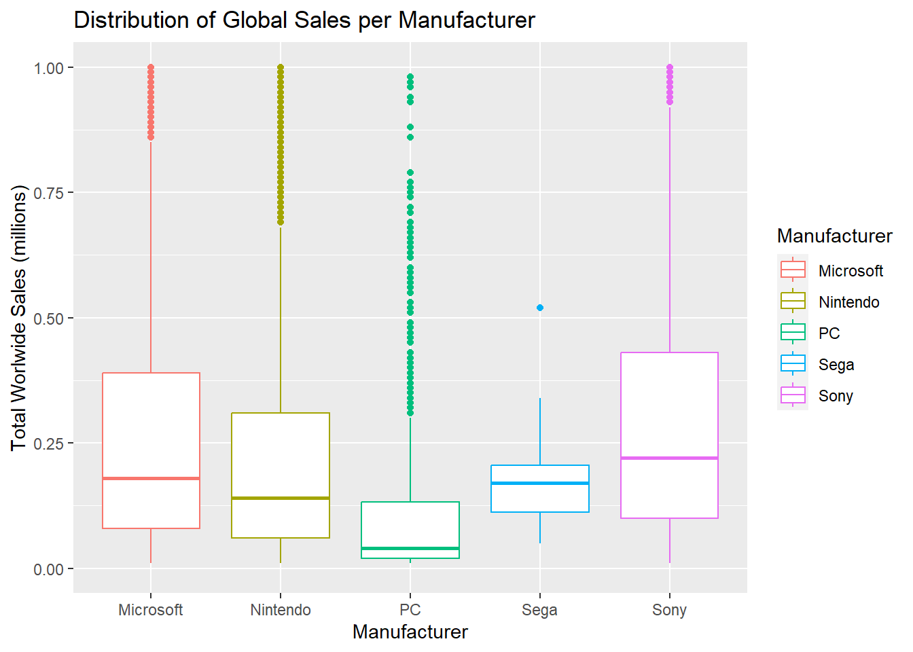
Next we’ll be testing whether the population means among the category Genre are significantly different as well.
Df Sum Sq Mean Sq F value Pr(>F)
Genre 11 212 19.245 7.134 3.27e-12 ***
Residuals 10225 27581 2.697
---
Signif. codes: 0 '***' 0.001 '**' 0.01 '*' 0.05 '.' 0.1 ' ' 1Once again, we receive an extremely small F-value telling us that the Genre means are significantly different.
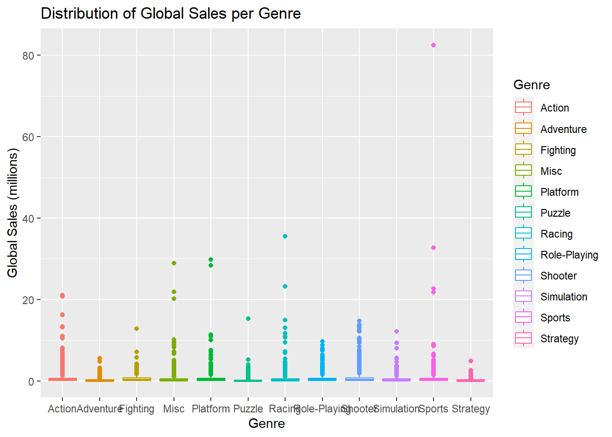
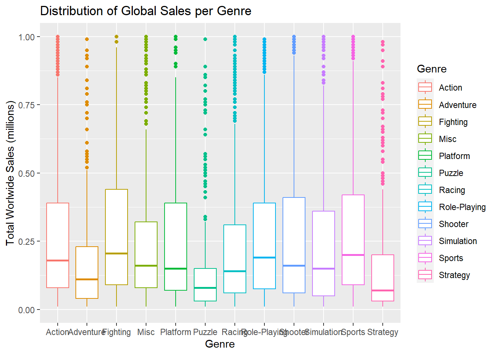
Finally, the last test will decided whether the Rating means are significantly different as well.
Df Sum Sq Mean Sq F value Pr(>F)
Rating 3 245 81.60 30.31 <2e-16 ***
Residuals 10233 27548 2.69
---
Signif. codes: 0 '***' 0.001 '**' 0.01 '*' 0.05 '.' 0.1 ' ' 1And again it looks like we receive another small F-value telling us that the Rating means are significantly different.
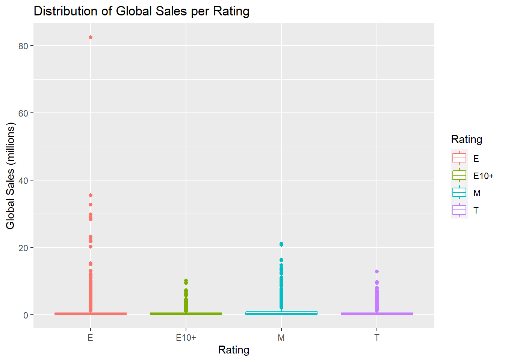
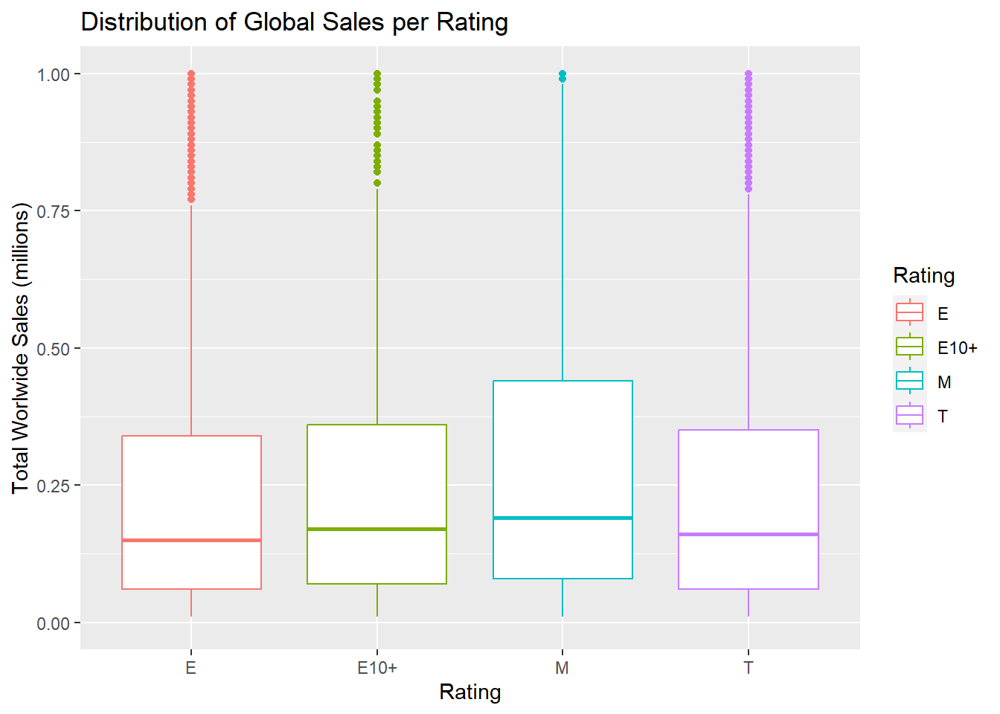
The point of a Chi-Square test is to determine whether there is any association between two categorical variables that may or may not be independent. As such, I’ll be testing my explanatory variables against each other and, individually against the control variable Rating. All variables tested must be categorical in the case of Chi-Square tests.
First, I’ll test Genre against the control.
Pearson's Chi-squared test
data: VGS3$Genre and VGS3$Rating
X-squared = 5263.6, df = 33, p-value < 2.2e-16Here we receive a very low p-value, telling me that I can reject the null and that Genre is not independent of Rating.
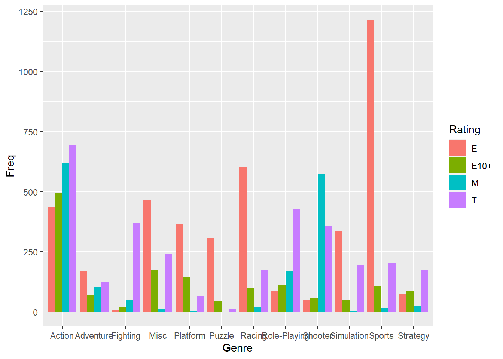
Next, I’ll be testing Manufacturer against Rating.
Pearson's Chi-squared test
data: VGS3$Manufacturer and VGS3$Rating
X-squared = 1691.1, df = 12, p-value < 2.2e-16Yet again, I received a low p-value and I know that these 2 variables are also not independent of each other
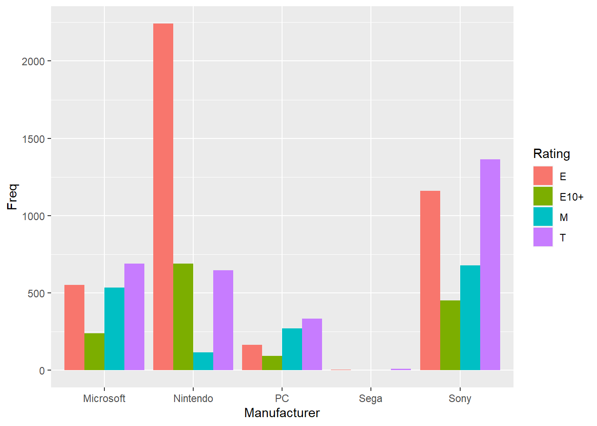
Lastly, I will be testing our explanatory variables against each other
Pearson's Chi-squared test
data: VGS3$Genre and VGS3$Manufacturer
X-squared = 1955.3, df = 44, p-value < 2.2e-16Even with my last test, I again receive a small p-value telling me the results are, yet again, statistically significant.
The first model I’ll be fitting takes into consideration the Global Sales and Manufacturer variables.
Call:
lm(formula = Global_Sales ~ Manufacturer, data = VGS3)
Residuals:
Min 1Q Median 3Q Max
-0.721 -0.501 -0.351 -0.054 82.009
Coefficients:
Estimate Std. Error t value Pr(>|t|)
(Intercept) 0.64427 0.03661 17.600 < 2e-16 ***
ManufacturerNintendo -0.11353 0.04550 -2.495 0.0126 *
ManufacturerPC -0.39851 0.06682 -5.964 2.55e-09 ***
ManufacturerSega -0.31927 0.44046 -0.725 0.4686
ManufacturerSony 0.08715 0.04559 1.912 0.0559 .
---
Signif. codes: 0 '***' 0.001 '**' 0.01 '*' 0.05 '.' 0.1 ' ' 1
Residual standard error: 1.642 on 10232 degrees of freedom
Multiple R-squared: 0.006984, Adjusted R-squared: 0.006596
F-statistic: 17.99 on 4 and 10232 DF, p-value: 9.827e-15From this model I receive a very small p-value, giving it statistical significance. However, the Adjusted R-Squared value is close to 0. This indicates response variable Global Sales is not explained by explanatory variable Manufacturer. The model does tell me however that releasing as a Nintendo or PC game leads to a higher likelihood of a decrease in worldwide sales, with PC being harshest at a decrease of -0.39851(million) .
The next model I create takes into consideration the Global Sales, Manufacturer & Rating variables. In this case, Rating serves as a control variable. From the model, I again score a very low p-value along with a low Adjusted R-squared. Even so, from it I can still gather that Rating is statistically significant. I know that games released with ratings of E10+ or T are more likely to negatively sell worldwide, with a decrease in -0.14225(million) Global Sales for games released with an E10+ rating. However, it seems as though rated M games have the opposite reaction and tend to sell better globally with an increase of 0.35798(million) in Global Sales.
Call:
lm(formula = Global_Sales ~ Manufacturer + Rating, data = VGS3)
Residuals:
Min 1Q Median 3Q Max
-1.069 -0.496 -0.334 -0.016 81.976
Coefficients:
Estimate Std. Error t value Pr(>|t|)
(Intercept) 0.60115 0.04477 13.429 < 2e-16 ***
ManufacturerNintendo -0.03711 0.04781 -0.776 0.43760
ManufacturerPC -0.41329 0.06662 -6.204 5.72e-10 ***
ManufacturerSega -0.22873 0.43872 -0.521 0.60214
ManufacturerSony 0.11971 0.04554 2.629 0.00858 **
RatingE10+ -0.14225 0.04973 -2.861 0.00423 **
RatingM 0.35798 0.05153 6.946 3.97e-12 ***
RatingT -0.10220 0.04096 -2.495 0.01262 *
---
Signif. codes: 0 '***' 0.001 '**' 0.01 '*' 0.05 '.' 0.1 ' ' 1
Residual standard error: 1.635 on 10229 degrees of freedom
Multiple R-squared: 0.01617, Adjusted R-squared: 0.0155
F-statistic: 24.02 on 7 and 10229 DF, p-value: < 2.2e-16The last model I’ll fit involving the Manufacturer variable is similar to the last, in the sense that it includes the Rating variable. This time, instead of using Rating as a control variable, I’d like to see how it interacts with Manufacturer in the model. We saw in previous tests that the variables were not considered independent and I’d like to see the their product.
Call:
lm(formula = Global_Sales ~ Manufacturer * Rating, data = VGS3)
Residuals:
Min 1Q Median 3Q Max
-1.158 -0.497 -0.296 -0.021 81.933
Coefficients: (1 not defined because of singularities)
Estimate Std. Error t value Pr(>|t|)
(Intercept) 0.52147 0.06953 7.500 6.93e-14 ***
ManufacturerNintendo 0.08559 0.07761 1.103 0.2701
ManufacturerPC -0.37403 0.14519 -2.576 0.0100 *
ManufacturerSega -0.07480 0.94490 -0.079 0.9369
ManufacturerSony 0.15962 0.08445 1.890 0.0588 .
RatingE10+ -0.02235 0.12660 -0.177 0.8599
RatingM 0.58546 0.09911 5.907 3.60e-09 ***
RatingT -0.08714 0.09325 -0.934 0.3501
ManufacturerNintendo:RatingE10+ -0.10606 0.14520 -0.730 0.4651
ManufacturerPC:RatingE10+ -0.01041 0.24620 -0.042 0.9663
ManufacturerSega:RatingE10+ NA NA NA NA
ManufacturerSony:RatingE10+ -0.20234 0.15562 -1.300 0.1936
ManufacturerNintendo:RatingM -0.90965 0.18487 -4.920 8.77e-07 ***
ManufacturerPC:RatingM -0.42672 0.18937 -2.253 0.0243 *
ManufacturerSega:RatingM -0.98213 1.88728 -0.520 0.6028
ManufacturerSony:RatingM -0.09842 0.12671 -0.777 0.4373
ManufacturerNintendo:RatingT -0.15411 0.11833 -1.302 0.1928
ManufacturerPC:RatingT 0.22153 0.18149 1.221 0.2223
ManufacturerSega:RatingT -0.04353 1.07847 -0.040 0.9678
ManufacturerSony:RatingT 0.05471 0.11377 0.481 0.6306
---
Signif. codes: 0 '***' 0.001 '**' 0.01 '*' 0.05 '.' 0.1 ' ' 1
Residual standard error: 1.632 on 10218 degrees of freedom
Multiple R-squared: 0.02058, Adjusted R-squared: 0.01886
F-statistic: 11.93 on 18 and 10218 DF, p-value: < 2.2e-16Once again, I receive a small p-value and Adjusted R-Squared, meaning statistical significance but that our response variable is not explained by the predictors. According to the numbers, rated M Nintendo & PC games are the least likely to sell well Globally. Nintendo’s decrease being the harshest with -0.98213(million).
The next set of models I’ll be fitting at their foundation must include the Global Sales and Genre variables. Eventually, I’ll be working in the Rating variable as I did with the previous models.
Call:
lm(formula = Global_Sales ~ Genre, data = VGS3)
Residuals:
Min 1Q Median 3Q Max
-0.826 -0.526 -0.336 -0.041 81.885
Coefficients:
Estimate Std. Error t value Pr(>|t|)
(Intercept) 0.610694 0.034640 17.630 < 2e-16 ***
GenreAdventure -0.326162 0.083301 -3.915 9.08e-05 ***
GenreFighting -0.021453 0.084976 -0.252 0.800693
GenreMisc -0.003596 0.064888 -0.055 0.955809
GenrePlatform 0.111836 0.076437 1.463 0.143468
GenrePuzzle -0.298688 0.092792 -3.219 0.001291 **
GenreRacing -0.019836 0.064862 -0.306 0.759755
GenreRole-Playing 0.045047 0.067740 0.665 0.506061
GenreShooter 0.225707 0.061552 3.667 0.000247 ***
GenreSimulation -0.126948 0.075973 -1.671 0.094757 .
GenreSports 0.044037 0.054317 0.811 0.417538
GenreStrategy -0.389677 0.092792 -4.199 2.70e-05 ***
---
Signif. codes: 0 '***' 0.001 '**' 0.01 '*' 0.05 '.' 0.1 ' ' 1
Residual standard error: 1.642 on 10225 degrees of freedom
Multiple R-squared: 0.007617, Adjusted R-squared: 0.006549
F-statistic: 7.134 on 11 and 10225 DF, p-value: 3.265e-12Like previous models, small p-value and Adjusted R-squared. Again we have statistical significance, but no noteworthy predictor. I can still see that the Shooter genre is the most likely to sell well globally with an increase of 0.225707(million), with an opposite reaction occurring for the Adventure, Puzzle and Strategy. Strategy games being the least likely to sell well with a decrease of -0.389677(million).
Like with the Manufacturer models, I will be introducing Rating as a control variable here. Again, I received a low p-value and Adjusted R-squared, so the predictors don’t explain the response variable. It’s important to note that the resulting estimates are nearly identical to those from the model that included Manufacturer as an explanatory value.
Call:
lm(formula = Global_Sales ~ Genre + Rating, data = VGS3)
Residuals:
Min 1Q Median 3Q Max
-1.014 -0.505 -0.322 -0.015 81.867
Coefficients:
Estimate Std. Error t value Pr(>|t|)
(Intercept) 0.57723 0.04800 12.025 < 2e-16 ***
GenreAdventure -0.32065 0.08332 -3.848 0.00012 ***
GenreFighting 0.05950 0.08703 0.684 0.49417
GenreMisc 0.07582 0.06690 1.133 0.25713
GenrePlatform 0.18728 0.07911 2.367 0.01794 *
GenrePuzzle -0.24564 0.09657 -2.544 0.01098 *
GenreRacing 0.03942 0.06810 0.579 0.56276
GenreRole-Playing 0.07739 0.06807 1.137 0.25559
GenreShooter 0.11574 0.06344 1.824 0.06811 .
GenreSimulation -0.05352 0.07807 -0.686 0.49301
GenreSports 0.09558 0.05985 1.597 0.11029
GenreStrategy -0.30272 0.09309 -3.252 0.00115 **
RatingE10+ -0.13038 0.05267 -2.476 0.01332 *
RatingM 0.33113 0.05966 5.550 2.93e-08 ***
RatingT -0.09415 0.04577 -2.057 0.03972 *
---
Signif. codes: 0 '***' 0.001 '**' 0.01 '*' 0.05 '.' 0.1 ' ' 1
Residual standard error: 1.637 on 10222 degrees of freedom
Multiple R-squared: 0.01466, Adjusted R-squared: 0.01332
F-statistic: 10.87 on 14 and 10222 DF, p-value: < 2.2e-16The last model now introduces the interaction between Genre and Rating. Even on this last model, I get a low p-value and Adjusted R-squared, giving statistical significance, but no explanation.
Call:
lm(formula = Global_Sales ~ Genre * Rating, data = VGS3)
Residuals:
Min 1Q Median 3Q Max
-1.095 -0.492 -0.300 -0.003 81.837
Coefficients: (1 not defined because of singularities)
Estimate Std. Error t value Pr(>|t|)
(Intercept) 0.46021 0.07825 5.882 4.19e-09 ***
GenreAdventure -0.12195 0.14723 -0.828 0.40753
GenreFighting -0.32396 0.58357 -0.555 0.57882
GenreMisc 0.16268 0.10886 1.494 0.13511
GenrePlatform 0.45218 0.11599 3.899 9.74e-05 ***
GenrePuzzle -0.17066 0.12193 -1.400 0.16162
GenreRacing 0.15580 0.10272 1.517 0.12936
GenreRole-Playing 0.36945 0.19296 1.915 0.05557 .
GenreShooter -0.37341 0.24420 -1.529 0.12627
GenreSimulation 0.03965 0.11858 0.334 0.73814
GenreSports 0.24319 0.09125 2.665 0.00771 **
GenreStrategy -0.17750 0.20562 -0.863 0.38801
RatingE10+ -0.01025 0.10737 -0.095 0.92397
RatingM 0.52678 0.10217 5.156 2.57e-07 ***
RatingT 0.02409 0.09983 0.241 0.80932
GenreAdventure:RatingE10+ -0.16259 0.25346 -0.641 0.52122
GenreFighting:RatingE10+ 0.12031 0.69770 0.172 0.86309
GenreMisc:RatingE10+ 0.06948 0.18065 0.385 0.70052
GenrePlatform:RatingE10+ -0.48472 0.19251 -2.518 0.01182 *
GenrePuzzle:RatingE10+ 0.20788 0.28006 0.742 0.45795
GenreRacing:RatingE10+ -0.04266 0.20667 -0.206 0.83646
GenreRole-Playing:RatingE10+ -0.37379 0.25711 -1.454 0.14603
GenreShooter:RatingE10+ 0.28896 0.33342 0.867 0.38614
GenreSimulation:RatingE10+ -0.06826 0.26631 -0.256 0.79771
GenreSports:RatingE10+ -0.18810 0.19681 -0.956 0.33923
GenreStrategy:RatingE10+ -0.05212 0.27883 -0.187 0.85172
GenreAdventure:RatingM -0.43610 0.22797 -1.913 0.05577 .
GenreFighting:RatingM -0.07180 0.63204 -0.114 0.90955
GenreMisc:RatingM -0.87505 0.47114 -1.857 0.06330 .
GenrePlatform:RatingM -0.90583 0.95373 -0.950 0.34225
GenrePuzzle:RatingM NA NA NA NA
GenreRacing:RatingM -0.88068 0.39457 -2.232 0.02564 *
GenreRole-Playing:RatingM -0.43619 0.23954 -1.821 0.06864 .
GenreShooter:RatingM 0.49127 0.26190 1.876 0.06072 .
GenreSimulation:RatingM -0.76263 0.74396 -1.025 0.30534
GenreSports:RatingM -0.98580 0.42410 -2.324 0.02012 *
GenreStrategy:RatingM -0.60140 0.38665 -1.555 0.11988
GenreAdventure:RatingT -0.20413 0.21743 -0.939 0.34782
GenreFighting:RatingT 0.45590 0.59296 0.769 0.44200
GenreMisc:RatingT -0.10644 0.16356 -0.651 0.51519
GenrePlatform:RatingT -0.57572 0.24049 -2.394 0.01669 *
GenrePuzzle:RatingT -0.10030 0.49160 -0.204 0.83834
GenreRacing:RatingT -0.08470 0.17255 -0.491 0.62353
GenreRole-Playing:RatingT -0.28161 0.21758 -1.294 0.19561
GenreShooter:RatingT 0.47458 0.26636 1.782 0.07483 .
GenreSimulation:RatingT -0.04573 0.17764 -0.257 0.79686
GenreSports:RatingT -0.25165 0.15901 -1.583 0.11355
GenreStrategy:RatingT -0.10959 0.24781 -0.442 0.65832
---
Signif. codes: 0 '***' 0.001 '**' 0.01 '*' 0.05 '.' 0.1 ' ' 1
Residual standard error: 1.636 on 10190 degrees of freedom
Multiple R-squared: 0.01905, Adjusted R-squared: 0.01462
F-statistic: 4.303 on 46 and 10190 DF, p-value: < 2.2e-16According to the data, Platform games rated E10+ & T along with rated M Racing & Sports games are all the least likely to sell well globally. Rated M Sports games are most likely to sell the least with a decrease in -0.98580(million).
Although all models presented similar results, the one I will be using to perform my diagnostics will be the one including the interaction between Manufacturer and Rating. This model seemed to have the highest R-squared value and presented some interesting data. Therefore, the regression model being used will be lm(Global_Sales ~ Manufacturer*Rating, data=VGS3).
The first plot I’ll draw out is the Residuals vs. Fitted plot. In it we can see that the linearity assumption is held up, but the constant variance assumption is violated. This is portrayed by the points not being evenly distributed around the origin, or 0. Additionally, there are still some very notable outliers.
The next plot I’ll be looking at is a Normal Q-Q which is easy to tell at a glance that a violation has been made. I can see that the plot starts off relatively linear but there is a skew as it reaches the end, meaning the Normality assumption has been violated.
The next plot is a Scale-Location plot. From the results I can see that there is an increasing trend, a direct violation of the Constant Variance assumption.
With the last plot that I’ll draw up, it’s easy to see the violation here immediately. In the graph, it’s clear that we have values greater than 4/n. This is a violation of the Influential Observation assumption.
Egenfeldt-Nielsen, Simon, et al. Understanding Video Games : The Essential Introduction, Taylor & Francis Group, 2012. ProQuest Ebook Central, https://ebookcentral.proquest.com/lib/uma/detail.action?docID=1181119.
Etchells, Pete. Lost in a Good Game: Why We Play Video Games and What They Can Do for Us. Icon Books, 2019.
McCullough, Hayley. (2019). From Zelda to Stanley: Comparing the Integrative Complexity of Six Video Game Genres. Press Start. 5. 137-149.
Gillies, Kendall. “Video Game Sales and Ratings.” Kaggle, 25 Jan. 2017, https://www.kaggle.com/datasets/kendallgillies/video-game-sales-and-ratings?resource=download.
---
title: "Project Analysis"
author: "Alexis Gamez"
description: "DACSS 603 Project Analysis"
date: "04/12/2023"
format:
html:
toc: true
code-fold: true
code-copy: true
code-tools: true
categories:
- finalpart2
---
```{r}
#| label: setup
#| warning: false
library(plyr)
library(tidyverse)
library(readr)
library(summarytools)
library(psych)
library(lattice)
library(FSA)
library(kableExtra)
knitr::opts_chunk$set(echo = T)
```
```{r, warning = F, message = F}
# reading in our data set
Video_Game_Sales <- read_csv("_data/final_project/Video_Game_Sales_as_of_Jan_2017.csv")
head(Video_Game_Sales)
```
# Feedback from Part 1
From my previous project proposal post, I was able to receive valuable feedback from Professor Pang. That feedback applying to my selection of variables and their classifications, which then applies to my hypothesis. Acknowledging the feedback, I'd like to address some changes to my analysis from my previous post.
The following list of variables was shown in my previous post along with an acknowledgment that this would be the list of variables that I was to work with throughout the duration of my project, and that remains true.
The variables are as follows:
- Name [game's name]
- Platform [platform of game release]
- Year of Release [game's release date]
- Genre [genre of game]
- Publisher [publisher of game]
- NA Sales [sales in North America in millions]
- EU Sales [sales in Europe in millions]
- JPN Sales [sales in Japan in millions]
- Other Sales [sales in rest of the world in millions]
- Global Sales [total worldwide sales in millions]
- Critic Score [aggregate score compiled by Metacritic staff]
- Critic Count [the number of critis used in creating the critic score]
- User Score [score according to Metacritic subscribers]
- User Count [number of users who gave the user score]
- Rating [ESRB rating for the game]
However, the feedback I received applied more directly to my classification of independent and dependent variables. I originally listed that I would be utilizing 6 independent and 5 dependent variables throughout my analysis. *See below for classifications*
The 6 independent variables are as follows:
- Platform
- Genre
- Publisher
- Rating
- Critic Scores
- User Scores
The 5 dependent variables are:
- NA Sales
- EU Sales
- JPN Sales
- Other Sales
- Global Sales
While not entirely untrue, it's definitely incorrect. The nature of this project requires the analysis of exploratory and explanatory variables using a combination of different regression and alternative analysis models. Therefore, an over saturation of exploratory (independent) variables could lead to an overly complex model. Knowing this now, I've reclassified the variables appropriately below.
The 2 main independent variables are as follows:
- Platform
- Genre
The 4 confounding variables are as follows:
- Publisher
- Rating
- Critic Scores
- User Scores
The 5 dependent variables are:
- NA Sales
- EU Sales
- JPN Sales
- Other Sales
- Global Sales
A confounding variable is a variable that influences both the dependent and independent variable, which causes a spurious association within the model. It must meet 2 conditions in order to be considered a true confounder.
1. It must be correlated to the independent variable, we'll be testing this at the beginning of the analysis.
2. It must be causally related to the dependent variable. Again, to be tested at the start of my analysis.
Also, note that our list of dependent variable did not change. That is because my goal for this project is to test my hypothesis within each individual region and compare their models side by side to see if my results are any more true or false in varying regions. My final results should include 5 total models, each one corresponding to a respective dependent variable. Thus, each model will contain 1 dependent variable, 2 independent variable and a varying number of confounders.
My last mention of feedback for this post will be acknowledging a shift in my original hypothesis for which I wrote, "As of 2017, independent variables “Platform” and “Genre” will have the most significant impact on Global sales". While believe what I wrote was representative of my hypothesis, I don't believe it was conducive to analysis and understanding from those reading this. As a result, I've decided to reorganize my hypothesis into a format that is a bit easier follow. I will also be rewording my research question to better reflect the changes made to my project's structure.
H1: Platform and Genre significantly impact Global Sales
H2: Platform and Genre significantly impact US and EU Sales
H3: Platform and Genre will not significantly impact JPN sales
**Of the two selected independent variables (Platform & Genre), what impact does each have on the commercial success of a video game and does that impact vary by region?**
With the corrections made to my hypothesis and research question, I believe I've acknowledged all the feedback I received from my first post.
# Expanding the Description of my Data
Picking up where I left off from the last post, my goal in this section is to acknowledge the steps I didn't get the opportunity to execute before. To start, I want to summarize my data and get a visual representation of the numbers to refresh my memory of what I'm working with.
```{r, warning = F, message = F}
dfSummary(Video_Game_Sales)
```
Looking at the data, I know there were a couple of adjustments I wanted to make following my last final project post. The first being a couple of adjustments to the platform variable. First, I'm going to extract all unique platform values to get a complete list of included platforms.
```{r, warning = F, message = F}
Plat_List <- unique(select(Video_Game_Sales, "Platform"))
as.list(Plat_List, sorted = T)
```
Next, I'll duplicate the `Platform` column and re-code the values so that they pertain to their respective manufacturer. This will clean up the data a bit and make analysis easier in the future.
```{r, warning = F, message = F}
VGS <- Video_Game_Sales
VGS$Manufacturer <- VGS$Platform
VGS <- VGS %>%
mutate(Manufacturer=recode(Manufacturer,
'PS4'='Sony',
'PS3'='Sony',
'PS2'='Sony',
'PS'='Sony',
'PSV'='Sony',
'PSP'='Sony',
'NES'='Nintendo',
'SNES'='Nintendo',
'N64'='Nintendo',
'GC'='Nintendo',
'DS'='Nintendo',
'Wii'='Nintendo',
'WiiU'='Nintendo',
'GBA'='Nintendo',
'3DS'='Nintendo',
'G'='Nintendo',
'GEN'='Sega',
'SCD'='Sega',
'GG'='Sega',
'SAT'='Sega',
'DC'='Sega',
'X'='Microsoft',
'X360'='Microsoft',
'XOne'='Microsoft',
'TG16'='NEC',
'PCFX'='NEC'))
```
Below, it can be seen that the re-coding worked! Now, we'll draw out a list of unique values for the rest of the categorical variables we have at our disposal
```{r, warning = F, message = F}
Manuf_List <- unique(select(VGS, "Manufacturer"))
as.list(Manuf_List, sorted = T)
```
```{r, warning = F, message = F}
Genre_List <- unique(select(VGS, "Genre"))
list(Genre_List)
```
```{r, warning = F, message = F}
Rating_List <- na.omit(unique(select(VGS, "Rating")))
list(Rating_List)
```
I'd like to better visualize my descriptive statistics from last time, so again I'm going to do some re-coding. This time, I will be re-coding the `Manufacturer`, `Genre` and `Rating` variables so that each unique value corresponds to a number. Again, this makes it easier to draw up our numbers.
```{r, warning = F, message = F}
VGS <- VGS %>%
mutate(Manufacturer = recode(Manufacturer,
`1` = "Sony",
`2` = "Nintendo",
`3` = "Sega",
`4` = "Microsoft",
`5` = "PC",
`6` = "Neo Geo",
`7` = "WS",
`8` = "3DO",
`9` = "NEC",
`10` = "2600"))
VGS <- VGS %>%
mutate(Genre = recode(Genre,
`1` = "Sports",
`2` = "Platform",
`3` = "Racing",
`4` = "Role-Playing",
`5` = "Puzzle",
`6` = "Misc",
`7` = "Shooter",
`8` = "Simulation",
`9` = "Action",
`10` = "Fighting",
`11` = "Adventure",
`12` = "Strategy"))
VGS <- VGS %>%
mutate(Rating = recode(Rating,
`1` = "E",
`2` = "M",
`3` = "T",
`4` = "E10+",
`5` = "K-A",
`6` = "AO",
`7` = "EC",
`8` = "RP"))
VGS_select <- VGS %>%
select(Genre, Manufacturer, Rating, Global_Sales, NA_Sales, EU_Sales, JP_Sales, Other_Sales)
VGS_Desc <- describe(x=VGS_select) %>%
select(c(vars, n, mean, sd, median, min, max, range))
kable(VGS_Desc) %>%
kable_styling("striped")
```
Our data is looking good! Next, I'd like to draw up our explanatory and control variable to see if there's any further cleaning we can do.
```{r, warning = F, message = F}
x_Manufacturer <- xtabs(~Manufacturer, data = VGS)
kable(x_Manufacturer) %>%
kable_styling("striped")
barplot(x_Manufacturer,
xlab = "Manufacturer",
ylab = "Frequency")
```
It looks like the data I have for 2600, 3DO, NEC, NG and WS is so small in comparison to the other manufacturers that it's practically negligible. I don't want this to adversely affect my analysis so I'm remove those rows from the data frame.
```{r, warning = F, message = F}
VGS2 <- VGS[VGS$Manufacturer %in% c("Sony", "2600", "Microsoft", "Nintendo", "PC", "Sega"),]
```
Now it's time to draw up the `Genre` variable.
```{r, warning = F, message = F}
x_Genre <- xtabs(~Genre, data = VGS)
kable(x_Genre) %>%
kable_styling("striped")
barplot(x_Genre,
xlab = "Genre",
ylab = "Frequency")
```
In this case, it seems all genres have adequate data and no changes need to be made.
The last variable I want to draw up is `Rating`
```{r, warning = F, message = F}
x_Rating <- xtabs(~Rating, data = VGS)
kable(x_Rating) %>%
kable_styling("striped")
barplot(x_Rating,
xlab = "Rating",
ylab = "Frequency")
```
Similar to manufacturer, there are some irrelevant pieces of data that I think my analysis could do without. In this situation, I'll be eliminating any rows containing ratings AO, EC, K-A and RP.
```{r, warning = F, message = F}
VGS3 <- VGS2[VGS2$Rating %in% c("E", "E10+", "M", "T"),]
```
# Hypothesis Testing
To start the hypothesis testing section I'd like to introduce my list of Explanatory, Response and Control Variables.
## Explanatory Variables
1. Genre
2. Platform/Manufacturer
## Response Varibles
1. Global Sales
2. NA Sales
3. JPN Sales
4. EU Sales
5. Other Sales
## Control Varibles
1. Publisher
2. Year of Release
3. Name
4. Critic Score
5. Critic Count
6. User Score
7. User Count
8. Rating
## ANOVA
In this section we'll be testing the explanatory variables, `Genre` & `Manufacturer`, against the main response variable `Global Sales`. We're also going to be testing a control variable `Rating` against sales to see if there is any significance. It's important to note that all 3 variables we will be testing are categorical, where as `Global Sales` is continuous.
First up is the `Manufacturer` variable.
```{r, warning = F, message = F}
M_aov <- aov(Global_Sales ~ Manufacturer, data = VGS3)
summary(M_aov)
```
Here we see that our Pr(>F) value is very small, allowing us to reject the null at a significance level of 0.001. This means the `Manufacturer` means are significantly different.
```{r, warning = F, message = F}
ggplot(VGS3, mapping = aes(x=Manufacturer, y=Global_Sales, color=Manufacturer))+
geom_boxplot() +
labs(title = "Distribution of Global Sales per Manufacturer", y = "Global Sales (millions)")
limit <- c(0, 1)
ggplot(VGS3, mapping = aes(x=Manufacturer, y=Global_Sales, color=Manufacturer))+
geom_boxplot() +
labs(title = "Distribution of Global Sales per Manufacturer", y = "Total Worlwide Sales (millions)") +
scale_y_continuous(breaks = seq(from =0, to = 1, by = .25),
limits = limit)
```
Next we'll be testing whether the population means among the category `Genre` are significantly different as well.
```{r, warning = F, message = F}
G_aov <- aov(Global_Sales ~ Genre, data = VGS3)
summary(G_aov)
```
Once again, we receive an extremely small F-value telling us that the `Genre` means are significantly different.
```{r, warning = F, message = F}
ggplot(VGS3, mapping = aes(x=Genre, y=Global_Sales, color=Genre))+
geom_boxplot() +
labs(title = "Distribution of Global Sales per Genre", y = "Global Sales (millions)")
ggplot(VGS3, mapping = aes(x=Genre, y=Global_Sales, color=Genre))+
geom_boxplot() +
labs(title = "Distribution of Global Sales per Genre", y = "Total Worlwide Sales (millions)") +
scale_y_continuous(breaks = seq(from =0, to = 1, by = .25),
limits = limit)
```
Finally, the last test will decided whether the `Rating` means are significantly different as well.
```{r, warning = F, message = F}
R_aov <- aov(Global_Sales ~ Rating, data = VGS3)
summary(R_aov)
```
And again it looks like we receive another small F-value telling us that the `Rating` means are significantly different.
```{r, warning = F, message = F}
ggplot(VGS3, mapping = aes(x=Rating, y=Global_Sales, color=Rating))+
geom_boxplot() +
labs(title = "Distribution of Global Sales per Rating", y = "Global Sales (millions)")
ggplot(VGS3, mapping = aes(x=Rating, y=Global_Sales, color=Rating))+
geom_boxplot() +
labs(title = "Distribution of Global Sales per Rating", y = "Total Worlwide Sales (millions)") +
scale_y_continuous(breaks = seq(from =0, to = 1, by = .25),
limits = limit)
```
## Chi-Square Test
The point of a Chi-Square test is to determine whether there is any association between two categorical variables that may or may not be independent. As such, I'll be testing my explanatory variables against each other and, individually against the control variable `Rating`. All variables tested must be categorical in the case of Chi-Square tests.
First, I'll test `Genre` against the control.
```{r, warning = F, message = F}
chisq.test(VGS3$Genre, VGS3$Rating, correct = F)
```
Here we receive a very low p-value, telling me that I can reject the null and that `Genre` is not independent of `Rating`.
```{r, warning = F, message = F}
table1 <- data.frame(with(VGS3, table(Genre,Rating)))
ggplot(table1, aes(x=Genre,y=Freq, fill=Rating))+
geom_bar(stat="identity",position="dodge")+
scale_fill_discrete(name = "Rating",labels = Rating_List)
```
Next, I'll be testing `Manufacturer` against `Rating`.
```{r, warning = F, message = F}
chisq.test(VGS3$Manufacturer, VGS3$Rating, correct = F)
```
Yet again, I received a low p-value and I know that these 2 variables are also not independent of each other
```{r, warning = F, message = F}
table2 <- data.frame(with(VGS3, table(Manufacturer,Rating)))
ggplot(table2, aes(x=Manufacturer,y=Freq, fill=Rating))+
geom_bar(stat="identity",position="dodge")+
scale_fill_discrete(name = "Rating",labels = Rating_List)
```
Lastly, I will be testing our explanatory variables against each other
```{r, warning = F, message = F}
chisq.test(VGS3$Genre, VGS3$Manufacturer, correct = F)
```
Even with my last test, I again receive a small p-value telling me the results are, yet again, statistically significant.
```{r, warning = F, message = F}
table3 <- data.frame(with(VGS3, table(Genre,Manufacturer)))
ggplot(table3, aes(x=Genre,y=Freq, fill=Manufacturer))+
geom_bar(stat="identity",position="dodge")+
scale_fill_discrete(name = "Rating",labels = Manuf_List)
```
# Model Comparisons
The first model I'll be fitting takes into consideration the `Global Sales` and `Manufacturer` variables.
```{r, warning = F, message = F}
M_fit <- lm(Global_Sales ~ Manufacturer, data = VGS3)
summary(M_fit)
```
From this model I receive a very small p-value, giving it statistical significance. However, the Adjusted R-Squared value is close to 0. This indicates response variable `Global Sales` is not explained by explanatory variable `Manufacturer`. The model does tell me however that releasing as a Nintendo or PC game leads to a higher likelihood of a decrease in worldwide sales, with PC being harshest at a decrease of -0.39851(million) .
The next model I create takes into consideration the `Global Sales`, `Manufacturer` & `Rating` variables. In this case, `Rating` serves as a control variable. From the model, I again score a very low p-value along with a low Adjusted R-squared. Even so, from it I can still gather that `Rating` is statistically significant. I know that games released with ratings of E10+ or T are more likely to negatively sell worldwide, with a decrease in -0.14225(million) `Global Sales` for games released with an E10+ rating. However, it seems as though rated M games have the opposite reaction and tend to sell better globally with an increase of 0.35798(million) in `Global Sales`.
```{r, warning = F, message = F}
MR_fit <- lm(Global_Sales ~ Manufacturer + Rating, data = VGS3)
summary(MR_fit)
```
The last model I'll fit involving the `Manufacturer` variable is similar to the last, in the sense that it includes the `Rating` variable. This time, instead of using `Rating` as a control variable, I'd like to see how it interacts with `Manufacturer` in the model. We saw in previous tests that the variables were not considered independent and I'd like to see the their product.
```{r, warning = F, message = F}
M_R_fit <- lm(Global_Sales ~ Manufacturer*Rating, data = VGS3)
summary(M_R_fit)
```
Once again, I receive a small p-value and Adjusted R-Squared, meaning statistical significance but that our response variable is not explained by the predictors. According to the numbers, rated M Nintendo & PC games are the least likely to sell well Globally. Nintendo's decrease being the harshest with -0.98213(million).
The next set of models I'll be fitting at their foundation must include the `Global Sales` and `Genre` variables. Eventually, I'll be working in the `Rating` variable as I did with the previous models.
```{r, warning = F, message = F}
G_fit <- lm(Global_Sales ~ Genre, data = VGS3)
summary(G_fit)
```
Like previous models, small p-value and Adjusted R-squared. Again we have statistical significance, but no noteworthy predictor. I can still see that the Shooter genre is the most likely to sell well globally with an increase of 0.225707(million), with an opposite reaction occurring for the Adventure, Puzzle and Strategy. Strategy games being the least likely to sell well with a decrease of -0.389677(million).
Like with the `Manufacturer` models, I will be introducing `Rating` as a control variable here. Again, I received a low p-value and Adjusted R-squared, so the predictors don't explain the response variable. It's important to note that the resulting estimates are nearly identical to those from the model that included `Manufacturer` as an explanatory value.
```{r, warning = F, message = F}
GR_fit <- lm(Global_Sales ~ Genre + Rating, data = VGS3)
summary(GR_fit)
```
The last model now introduces the interaction between `Genre` and `Rating`. Even on this last model, I get a low p-value and Adjusted R-squared, giving statistical significance, but no explanation.
```{r, warning = F, message = F}
G_R_fit <- lm(Global_Sales ~ Genre*Rating, data = VGS3)
summary(G_R_fit)
```
According to the data, Platform games rated E10+ & T along with rated M Racing & Sports games are all the least likely to sell well globally. Rated M Sports games are most likely to sell the least with a decrease in -0.98580(million).
Although all models presented similar results, the one I will be using to perform my diagnostics will be the one including the interaction between `Manufacturer` and `Rating`. This model seemed to have the highest R-squared value and presented some interesting data. Therefore, the regression model being used will be `lm(Global_Sales ~ Manufacturer*Rating, data=VGS3)`.
# Diagnostics
The first plot I'll draw out is the Residuals vs. Fitted plot. In it we can see that the linearity assumption is held up, but the constant variance assumption is violated. This is portrayed by the points not being evenly distributed around the origin, or 0. Additionally, there are still some very notable outliers.
```{r, warning = F, message = F}
plot(lm(Global_Sales ~ Manufacturer*Genre, data = VGS3), which = 1)
```
The next plot I'll be looking at is a Normal Q-Q which is easy to tell at a glance that a violation has been made. I can see that the plot starts off relatively linear but there is a skew as it reaches the end, meaning the Normality assumption has been violated.
```{r, warning = F, message = F}
plot(lm(Global_Sales ~ Manufacturer*Genre, data = VGS3), which = 2)
```
The next plot is a Scale-Location plot. From the results I can see that there is an increasing trend, a direct violation of the Constant Variance assumption.
```{r, warning = F, message = F}
plot(lm(Global_Sales ~ Manufacturer*Genre, data = VGS3), which = 3)
```
With the last plot that I'll draw up, it's easy to see the violation here immediately. In the graph, it's clear that we have values greater than 4/n. This is a violation of the Influential Observation assumption.
```{r, warning = F, message = F}
plot(lm(Global_Sales ~ Manufacturer*Genre, data = VGS3), which = 4)
```
# Next Steps
Unfortunately, I wasn't able to introduce all the control variables I would've liked to before this assignment was due. I had trouble re-coding the Publisher control variable as there are so many different ones and the process would've have overly tedious for the time that I had. If possible, I'd also like to introduce the critic and user score control variables as well.
Additionally, I'd like to introduce regional sales as alternative response variables as opposed to global sales to see if any significance can be drawn from that data as well.
### References
Egenfeldt-Nielsen, Simon, et al. Understanding Video Games : The Essential Introduction, Taylor & Francis Group, 2012. ProQuest Ebook Central, https://ebookcentral.proquest.com/lib/uma/detail.action?docID=1181119.
Etchells, Pete. Lost in a Good Game: Why We Play Video Games and What They Can Do for Us. Icon Books, 2019.
McCullough, Hayley. (2019). From Zelda to Stanley: Comparing the Integrative Complexity of Six Video Game Genres. Press Start. 5. 137-149.
Gillies, Kendall. “Video Game Sales and Ratings.” Kaggle, 25 Jan. 2017, https://www.kaggle.com/datasets/kendallgillies/video-game-sales-and-ratings?resource=download.